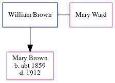

Mary Brown (née Ward)
[ Home ] | [ Calendar ] | [ Surnames Index ] | [ Errors ] | [ Family History ]Mary Ward and had 1 child with William Brown: Mary S.
Children
- Mary S was born c. 1859
Family Tree
Generated by ged2site. Last updated on Jul 3, 2024
Known Issues
Can't find relationship with the home person